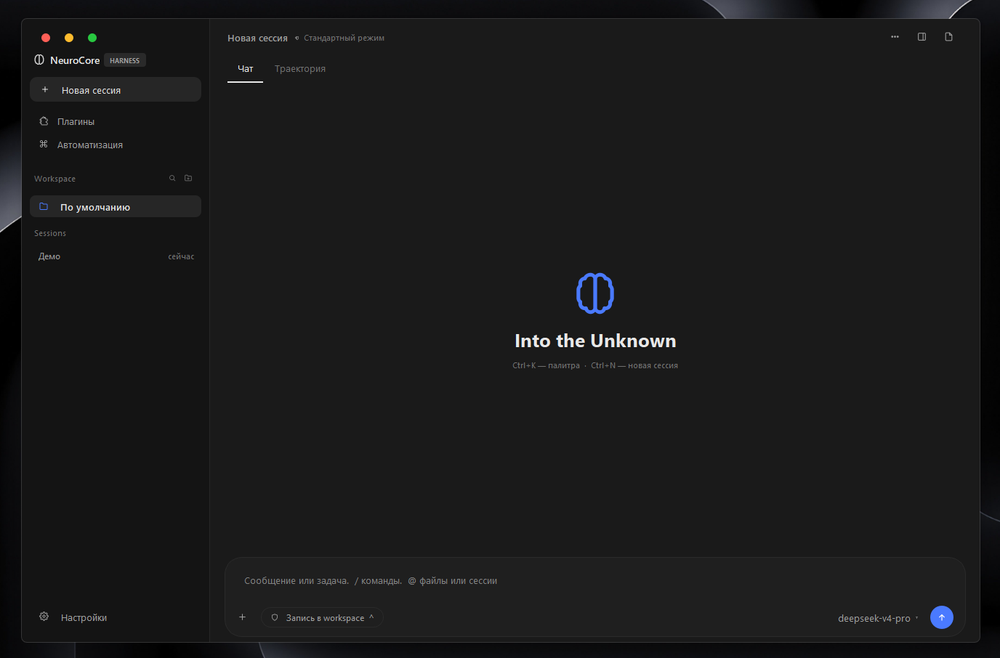
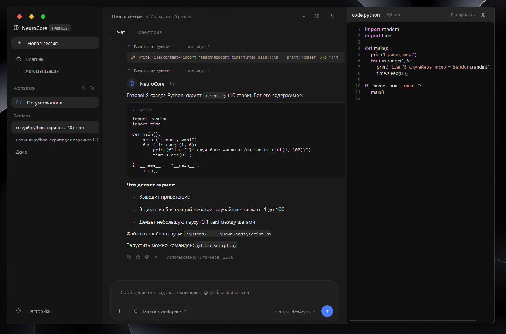
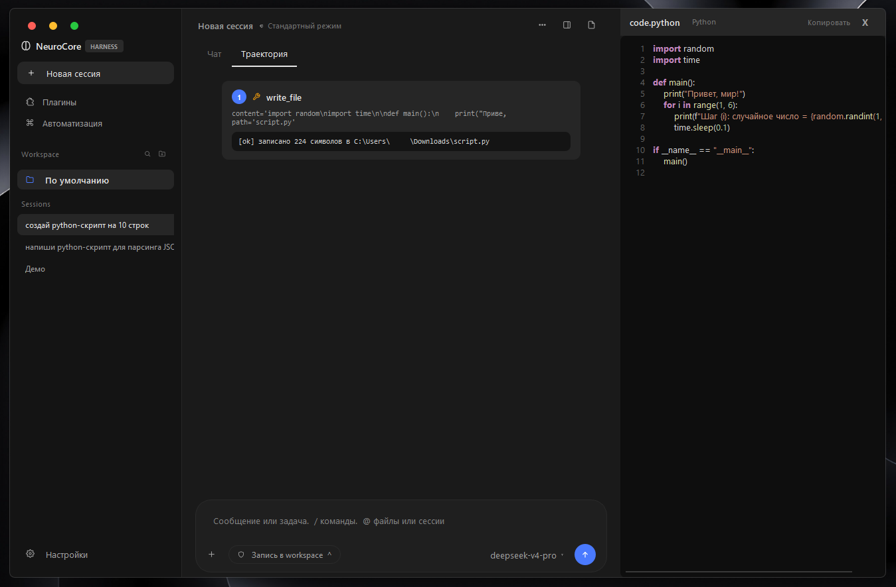
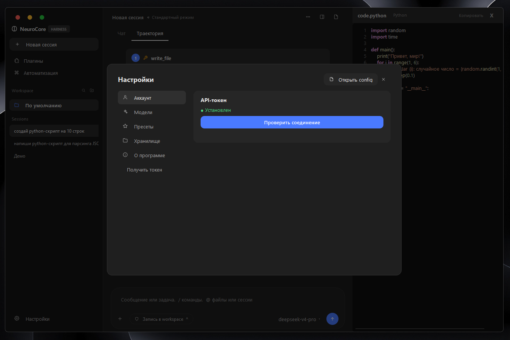

Автономный AI-агент на базе DeepSeek. 36 инструментов. Нативный GUI.




Слева — диалог с агентом. Справа — панель кода с подсветкой, которая автоматически открывает файлы, созданные агентом.

Все вызовы инструментов пошагово: что вызвано, с какими аргументами, какой результат вернул.

git clone https://github.com/YTrolan/neurocore.git
cd neurocore
pip install -e .
python -m neurocore.gui
Подробно — docs/installation.md.
Три способа:
userToken.set DEEPSEEK_TOKEN=...~/.neurocore/token.txt| Категория | Инструменты |
|---|---|
| Файлы | read_file, write_file, grep, find, mv, cp, rm, mkdir |
| Система | shell, system_info, process_list, env_get/set, disk_usage |
| Интернет | deepseek_search, web_fetch, http_get, open_url |
| Desktop | screenshot, click, type, hotkey, scroll, windows, clipboard |
| Браузер | browser_open, browser_click, browser_type, links, back |
| Данные | hash, base64, json_pretty, uuid, rand |
| Медиа | generate_image (Pollinations) |
| Утилиты | calc, sleep, time_now, notify, find_in_page, cleanup |
Полный список — docs/tools.md.
› какая сейчас погода в Москве
› найди python-скрипт для парсинга JSON, сохрани в parser.py
› открой wikipedia.org/wiki/Python и дай первые 300 символов
› открой блокнот и напиши "Hello, World"
› нарисуй кота в космосе
› посчитай 12345 * 6789
neurocore/
├── neurocore/
│ ├── gui.py # Главное окно
│ ├── code_panel.py # Панель кода справа
│ ├── agent/loop.py # Цикл агента
│ ├── core/ # Провайдеры
│ ├── tools/builtin/ # 36 инструментов
│ └── ...
├── docs/ # Документация + скрины
├── pyproject.toml
└── README.md
git clone https://github.com/YTrolan/neurocore.git
cd neurocore
python -m venv .venv
.venv\Scripts\activate
pip install -e .
python -m neurocore.gui
Как добавить свой инструмент — CONTRIBUTING.md.
Issues и Pull Requests приветствуются. См. CONTRIBUTING.md.
Проект создан и поддерживается:
Благодарности библиотекам и сервисам — CONTRIBUTORS.md.
Если NeuroCore оказался полезен — можешь поддержать разработку:
Ссылка: https://www.donationalerts.com/r/ro1ton_1
Спасибо! ❤️
Proprietary — All Rights Reserved.
Проект опубликован в ознакомительных целях. Просмотр разрешён, но копирование, изменение, распространение и коммерческое использование запрещены без письменного разрешения автора.
Полные условия — LICENSE.
NeuroCore — сделано с ❤️ для автоматизации